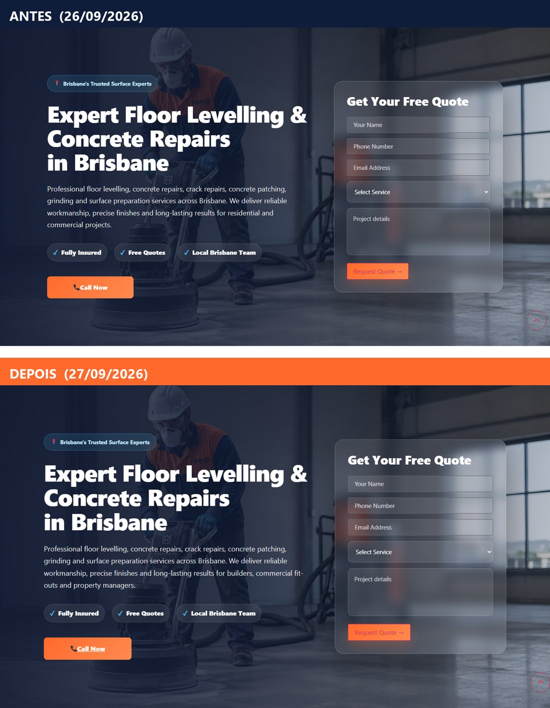
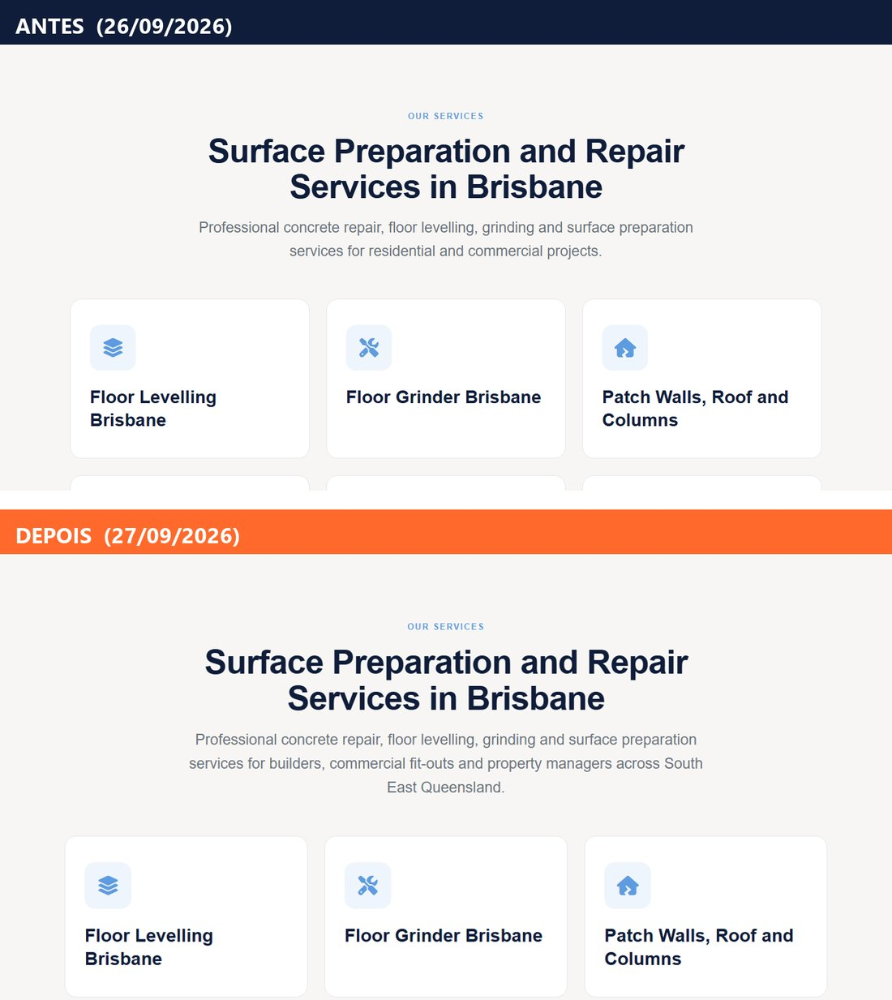
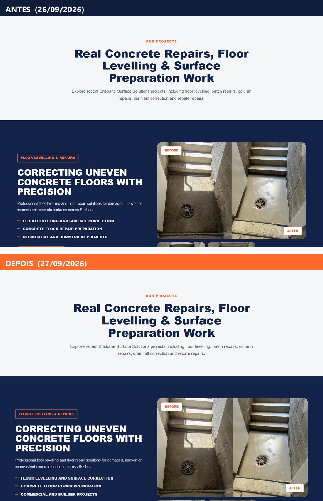
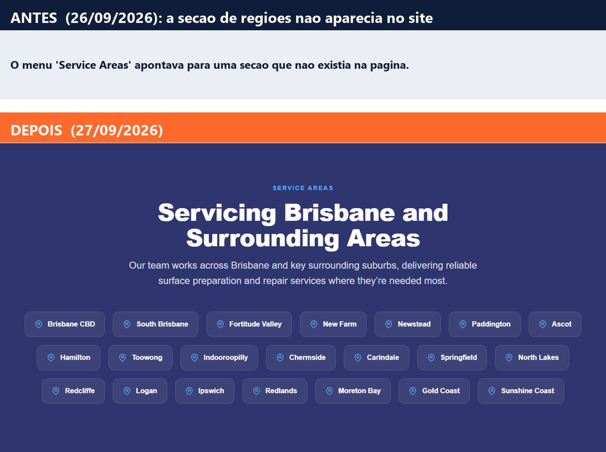
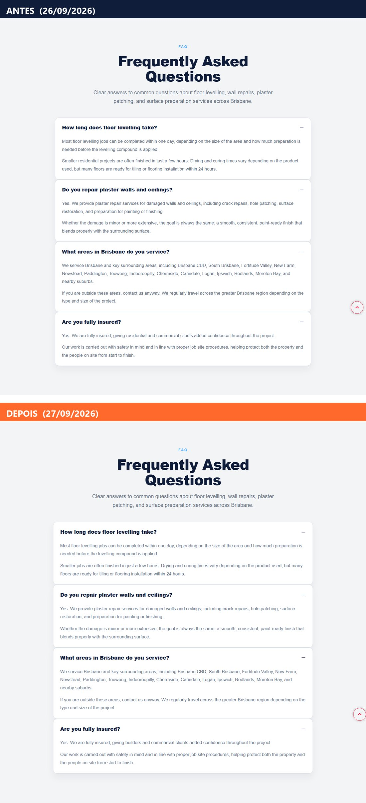
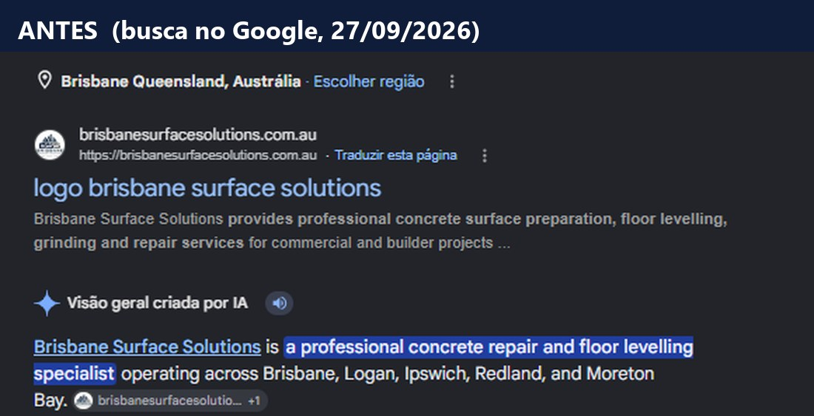

Site · 27 de setembro de 2026
Com o acesso ao painel na mão, entrei no site no domingo e deixei feito o que estava combinado, mais dois defeitos que só apareceram por dentro. Cada mudança abaixo tem a imagem de como estava e de como ficou.
Resumo
Tudo foi feito no painel do próprio site, com a versão anterior guardada. Nenhuma mudança de estrutura, só o que precisava para o site dizer o que a gente anuncia.
O título da página não trazia o nome da empresa, e por isso o Google mostrava "logo brisbane surface solutions" na linha azul da busca.
O Google leva alguns dias para atualizar o que exibe. Até lá o "logo" ainda pode aparecer.
O link "Contact" estava escrito errado e abria uma página inválida em vez do e-mail. Contato perdido, sem ninguém saber.
http://contact@brisbanesurfacesolutions.com.aumailto:contact@brisbanesurfacesolutions.com.au"Residential and commercial" aparecia em cinco pontos da página. Tudo o que a gente faz de anúncio e conteúdo é para builders, fit-out comercial e property managers, e agora o site diz isso.
O menu "Service Areas" apontava para uma seção que não existia na página. Ela existia no código, mas estava invisível (defeito 5). Agora está no ar, com 21 localidades.
O bloco "How it works" estava duplicado, e a segunda cópia tinha o código de estilo cortado no meio. Tudo que vinha depois dela virava texto invisível. Fechei o código e a seção reapareceu. É defeito de construção do site, anterior ao nosso trabalho.
Ao salvar, o site passou a mostrar "Brisbane Surface Solutions" em texto simples acima da capa. Ajustado no mesmo dia, antes das fotos finais.
Antes e depois
O "antes" é o site como estava em 26 de setembro. O "depois" é o site no ar em 27 de setembro.





